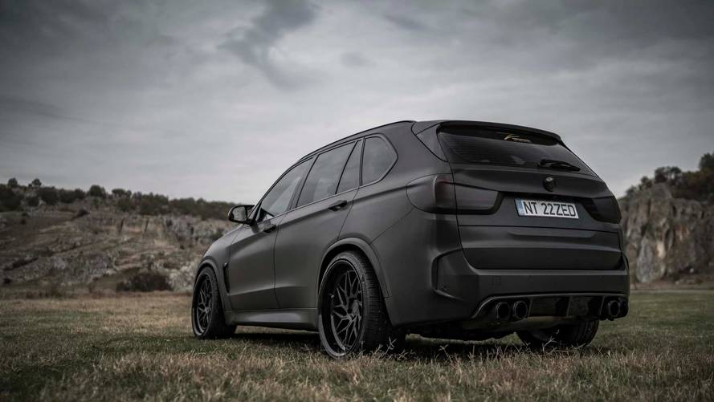
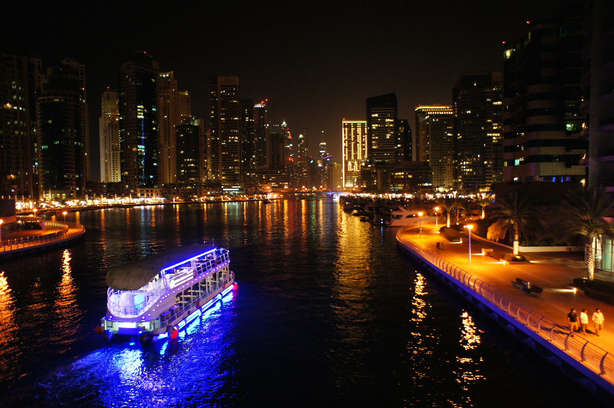

Nader’s brother Samer, drove a BMW X5M, Nader’s oldest brother Rammy, currently drives a Evo X, and last but certainly not least his other brother Ali, drives an Audi RS5.
Nader was born here in Highlands Ranch, Colorado. He lived here with his family until Nader was 7 years old when he made the big move over to Dubai. Nader visited every summer to visit his friends and family. Also Nader would come back to get out of the hot Dubai heat. Nader’s family decided to make the move back to Highlands Ranch this year because his dad had to keep up with the family’s dealership
. 